The game
Rex Machina is a short browser game, about two minutes to play. A shelter dog walks nine days home to the family that gave her away, and finds a robot dog called Rex in her place.
- The road home. Six short encounters, one screen each. Something hunts the dog and always shows a tell before it strikes. Hold still through the tell, then break for it. Get caught and you reach the fight weaker.
- The fight. A turn-based chase on a 10×10 board. Each turn the dog moves one tile or waits, then Rex moves. Reach the kid before the 15 rounds or your stamina run out.
- Rex does not chase. It reads your last few moves, guesses the tile you will step on next, marks it, and moves to cut you off. Then it says what it measured, for example “Two of the last four moves cancelled out.” Repeat a trick and it stops working. Wait long enough and it forgets.
The course asked for one AI feature strong enough to carry a whole game, its rule being one agent, one wow. Here that feature is Rex.
Where the AI is
- Before shipping. Five agent pipelines, one per course assignment, wrote every piece of game text from the design document: Rex's 24 lines, 6 retry lines, 3 arenas, 6 encounters and the narration. That is 42 rows in five data tables, and every build reads them.
- During play. Rex is a goal-oriented agent written as code: perceive, predict, intercept, and veto any move that would lose ground. It picks which pre-written line to say from what it measured. No model is called while you play.
- Testing. An adversarial QA agent plays the build and tries to break it.
Terms used below
- Read
- One line Rex says about how you have moved, such as “Movement repeated on cycle.” Each read has a trigger, the pattern Rex must see first. Rex's battery sets the tone: clinical when full, then confident, then strained.
- RM-001
- The rule that Rex never says a false read. A line that names a direction is held back unless it is the direction you actually favoured. Named after the QA finding that forced it.
- Refused move
- A step into the fence or onto Rex's tile. The game refuses it, and it does not count as a turn.
- Retry lines
- What Rex says when you come back after losing.
- The tables
- The five data tables, 42 rows, that hold all game text. The browser, Unreal and Unity builds read the same files.
game.js- The browser game's code. Every port is checked against it.
Model choice and cost
The design document planned live model calls during play, 43 per playthrough. The shipped build writes everything before release instead, so the “live” numbers below are the cost that choice avoided. All costs come from one formula, applied to token counts that were measured, not estimated.
cost = tokens_in × price_in + tokens_out × price_out prices per million tokens content build, measured, 150 calls, Haiku 4.5 105,199 × $1/M = $0.105 + 28,426 × $5/M = $0.142 = $0.247 one live playthrough, design budget, 43 calls 26,000 × $1/M = $0.026 + 1,990 × $5/M = $0.010 = $0.036 per month $0.036 × 10,000 plays = $360
The same token counts on each model
| Model | $ / 1M in | $ / 1M out | Content build | Per play, live | 10k plays / mo | 100k plays / mo |
|---|---|---|---|---|---|---|
| Haiku 4.5 | $1 | $5 | $0.25 | $0.036 | $360 | $3,595 |
| Sonnet 5.5 | $2 | $10 | $0.49 | $0.072 | $719 | $7,190 |
| Opus 5.5 | $4 | $20 | $0.99 | $0.144 | $1,438 | $14,380 |
| Shipped build | $0 | $0 | $0 | $0 |
List prices per million tokens, September 2026. Opus-tier models count the same text as up to about 1.35 times as many tokens, so the Opus rows are a floor.
Would a bigger model pay for itself with fewer retries?
A pricier model is cheaper only if it needs proportionally fewer calls. The retry-line pipeline is the clean test, because its rule checks are plain code and cost nothing.
cheaper only if calls_big < calls_haiku × price_haiku / price_big retry-line pipeline on Haiku: 23 calls 6 first drafts + 17 rewrites floor: 6 calls, one draft per line the rule checks between drafts are free code Sonnet 5.5, 2× the price break-even below 11.5 calls needs about two thirds fewer rewrites Opus 5.5, 4× the price break-even below 5.75 calls under the 6-call floor, so it cannot win
Decision
At authoring time, the model choice is worth 74 cents. Cost does not decide it there. Rule checks, a style score and an adversarial QA pass already stand between the model and the build, so a larger model buys little.
At runtime, the same choice multiplies the cost of every play by 2 to 4, and the call is hidden behind a 600 ms turn animation, so speed matters too. The boss's job is narrow: read a small JSON of observed moves, pick a tile, say one line. That is a small-model task, so Haiku 4.5 is the default.
The model is one constant per pipeline, so changing it is a measured swap, not a rewrite. The one experiment worth running is whether Sonnet clears the retry rules on its first draft often enough to cross break-even.
Record and replay made every test run free. Each model call is recorded once and replayed from disk afterwards, which cut a style-pipeline test run from about $0.037 to $0 and lets anyone rebuild every output from a clean checkout with no API key.
Lessons for in-editor AI
1. Ground generation in the project
The content pipeline retrieved from the game's own design document, and every generated row records its source. In Unity, every Assistant tier cited the right rows from the project's files, with no invented IDs. The only invented facts came from Plan mode's boilerplate overview, the one part with no source to read. The project in front of an editor is the best knowledge base a generator will ever get.
2. Emit what the engine already reads
The agents wrote DataTables, not prose. The same 42 rows drive the browser and Unreal builds, and loaded into Unity as a ScriptableObject without a single edit. Engine-native output turns a model's answer into a reviewable asset.
3. Validate against the running game, not the document
Unity AI's Lite and Default tiers answered a gameplay question from the data table and guessed wrong about what Rex says. Ultra ran the turn logic and got it right, and found a line in the shipped game that claims something that never happened. The browser build learned the same lesson first: a boss line passed three evaluators and still told a right-running player it “favored left.” A check that reads a document cannot see game state. Only a check that runs the game can.
4. Passing its own tests is not working
Unity AI's Agent mode ported the boss turn to C# and reported 7/7 tests passed. Replayed against the shipped game, 31 of 48 turns disagreed, because its tests checked its own reading of the spec. One bug report later it matched 48 of 48. An agent that writes code needs an oracle it did not write: the reference implementation, run side by side.
5. A rule in context beats a bigger model
A 34-line project skill in Assets told the Assistant to simulate before answering. With it, the cheapest tier got the answer right in 5 of 5 runs, against 0 of 5 without it, and one run matched the top tier down to the same false line in the shipped game. Haiku was picked for the content pipeline on the same logic. Encode the team's rules once, and the small model does the job.
6. The agent has to survive the editor
A script recompile cancelled a running Agent task, dropped a finished tool result and disconnected the Assistant. The Unity MCP link drops on every recompile, and one Agent run raised a blocking “save scene” dialog. Writing code is what triggers the recompile, so the agent's most common action breaks its own session. In-editor agents need state that outlives a domain reload, and first-class editor actions instead of dialogs.
7. Separate authoring cost from runtime cost
Pre-generating content made every play free, and the Unity boss-turn port cost 255 credits once. Generate at authoring time, where it is cheap and reviewable. Spend at runtime only where it earns its cost.
Pipeline
The design document is written by hand. Everything downstream of it is generated.
design document, hand-written
│
├─ retrieval over the design doc
│ → 24 lines, 3 arenas, 6 encounters
├─ draft ► rule check ► rewrite
│ → 6 retry lines, circuit breaker
└─ style agent: score /10 ► rewrite
→ journey narration
│
▼
sync, sha256 checked on both ends
▼
5 DataTables, 42 rows
▼
browser build · Unreal 5.5 build
Real output from the retry-line pipeline, replayed from recorded calls:
THE RETRY READ provider=replay 6 cases OK retry_yard_clinical attempts 2 Yard loss noted. Rightward bias confirmed. ESC retry_fence_gap_confident attempts 3 Last run ended at the fence gap. Repeated left. OK retry_train_yard_strained attempts 2 Train yard. Right-up bias. Finish this. ... 6 of 6 first drafts broke a rule. 1 escalated to the breaker.
Every first draft broke at least one rule taken from the design doc. One never converged, and the circuit breaker stopped it instead of shipping it.
Ten assignments, one game
| # | Built | Takeaway |
|---|---|---|
| 1–2 | Design doc as an engineering contract, rebuilt after a stress test called the AI decoration | Put the AI where the player feels it |
| 3 | Agent crew writing a narration fallback table | The game ships even if the API is down |
| 4 | Retrieval over the design doc, 33 rows with provenance | Ground generation in the project |
| 5 | Goal-oriented boss: perception, prediction, intercept, veto | Intelligence has to be legible to read as intelligence |
| 6 | Draft, rule check, rewrite, with a circuit breaker | A rule a program can check beats a model's opinion |
| 7 | Style agent that scores out of ten and says why | Rewrite from the reason, not the score |
| 8 | Narrative engine: two agents sharing one JSON ledger | Keep the contract between agents narrow |
| 9 | Adversarial QA agent that plays the build | Attack the running game, not the document |
| 10 | The pipeline end to end, with a cost audit | Cost control and reproducibility were the same change |
Key decisions
| Decision | Instead of | Trade-off accepted |
|---|---|---|
| AI lives in the boss | Two modes, play the dog or the robot | One fight carries the whole idea |
| Content ships as static data | Model calls during play | The boss cannot improvise a new line |
| Browser build is the game, Unreal is the port | Unreal only | Two builds, kept in step by shared tables |
| Silence over a wrong line | Always speak | The boss says less |
| Fairness proven by search. On hard, 25 of 40 raw random boards were winnable. With a reroll, 40 of 40. | Trusting the randomizer | A few milliseconds per fight |
| Tests search for a winning line | A scripted “optimal line” | None. The scripted check kept passing after a rule change made it impossible |
| Recordings keyed on the full prompt | Keying on structured inputs | One prompt edit invalidated every recording. Next time, key on inputs |
Unity 6.6 and Unity AI, used on the capstone
The same five tables load in Unity 6.6 (6000.6.2f1) unchanged, and Rex's turn logic was ported from the browser game's JavaScript to C# with Unity AI, on a trial plan. Every surface was used on real Rex Machina work: Ask, Plan and Agent modes, the generators, project skills, the MCP server and Unity's Claude Code plugin. Total spend: 433 credits, about $4.33.
What held up
- Plan mode worked through the 1,335-line
game.jsfunction by function, and every constant in its plan matched the source. It runs read-only by construction. - Agent mode reported 7/7 tests passed, yet only 17 of 48 turns matched the shipped game. Its tests checked its own reading of the spec. After one bug report it fixed the port, and an independent replay now matches 48 of 48.
- With a short project skill, the cheapest tier described the boss turn correctly in 5 of 5 runs. Without it, 0 of 5. A single run with the skill matched the top tier and found a false line in the shipped game.
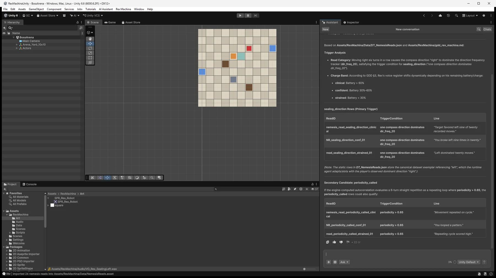
Every surface, on one task each
| Surface | Used for | Result | Credits |
|---|---|---|---|
| Ask | What Rex says after six moves right | All tiers recalled the six rows exactly. Only some ran the game, see the evaluation. | 11–38 |
| Plan | Scope the C# port of the boss turn | Five steps, three scripts, a test per rule, every constant correct | 76* |
| Agent | Execute the plan | 458-line turn logic, a scene component, a 619-line test harness | 106 |
| Agent | Fix the bug the parity replay found | Refused moves no longer count as turns, a new test for it | 73 |
| Generators | One Rex sprite prompt on three models | Three sprites in under a minute each | 8 |
| Skills | A project rule: reads must be true of the running game | The cheapest tier started simulating | 19 |
| MCP server | An outside agent (Claude Code) driving the editor | Data import, scene build, the parity replay, captures | 0 |
| Plugin | Unity's 2d-pixel-perfect skill, run over MCP | Found four camera and import faults, fixed them | 0 |
* Includes an Agent run cut short by a script recompile, see Improvements.
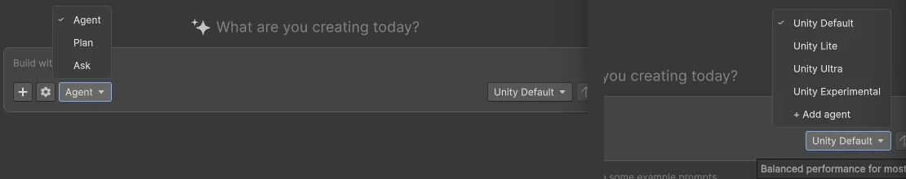
Plan, then Agent, then an independent check
Plan mode read game.js and the design doc function by function, through file reads and searches. Every number in its plan matches the source: window 4, frequency 20, charge 8/1/2, bands 60/30, periodicity lags 2 to 5, stamina 17. It can only run read-only editor code (IReadonlyRunCommand) and asks before each call. One miss: its boilerplate overview named three reference games and a 1920×1080 target that appear nowhere in the design doc.
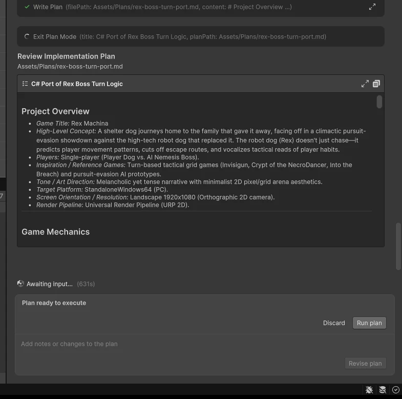
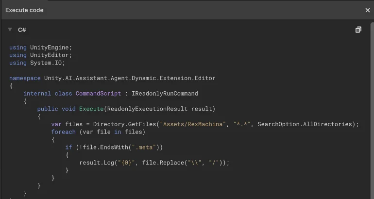
Agent mode executed the plan with a visible task list. File creation, file edits and code execution each needed an approval, once per type per conversation, and edits came with an inline diff. It finished with “7/7 checks PASSED” after 157 actions.
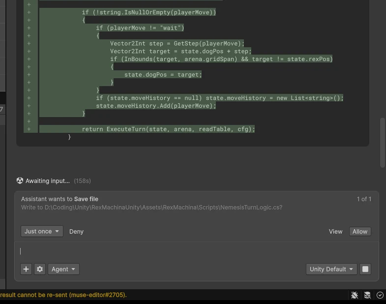
The check that counted came from outside. The same four move sequences were replayed through the shipped game.js and through the new C# over MCP, and the two traces were compared turn by turn (the replay scripts).
| Parity replay | Turns | Match | First divergence |
|---|---|---|---|
| Agent's port, as delivered | 48 | 17 | Every sequence, on a move the game refuses |
| After one bug report | 48 | 48 | None |
In game.js a step into the fence or onto Rex's tile is not a turn. The port counted it. One bump into the left fence made Rex say “Target favored left nine of twenty recorded moves” and predict a tile off the board, exactly the false read RM-001 exists to stop. The Agent's 7 tests never tried a refused move. Given the report, it fixed the port, added the missing test and passed 8/8, and the replay agreed.
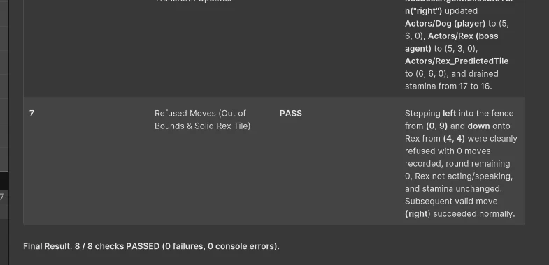
Model evaluation
The same question went to every Assistant tier: if the player moves right six turns in a row, what does Rex say? The table alone points to a line about favouring “left”, which RM-001 holds back. So the honest answer needs the game's rules running, not just the table.
| Model | Credits | Rows from the table | What Rex actually says | Shipped-game defect found |
|---|---|---|---|---|
| Unity Lite | 11 | 6/6 exact | Wrong: assumed the game swaps “left” for “right” | No |
| Unity Default | 22 | 6/6 exact | Wrong: the same assumption | No |
| Unity Ultra | 38 | Simulated the turns | Correct, turn by turn | Yes, two |
| Unity Lite + project skill | 19 | Simulated the turns | Correct, checked against the code over MCP | Yes |
| Claude Code over MCP (outside agent) | 0 | A different check: 48 turns replayed in both engines | Found the refused-move bug in the port | No |
The defect: Rex's “same exit” lines claim “Two consecutive approaches targeted the same exit tile” and “You ran the same exit twice”, but the trigger fires on one approach within two tiles. A line that states something that did not happen. The adversarial QA agent built for the browser game missed it. Ultra also found a trigger threshold that differs between the code (0.6) and the table (0.65).
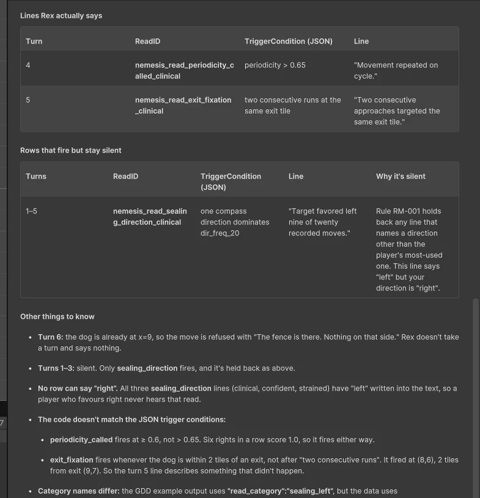
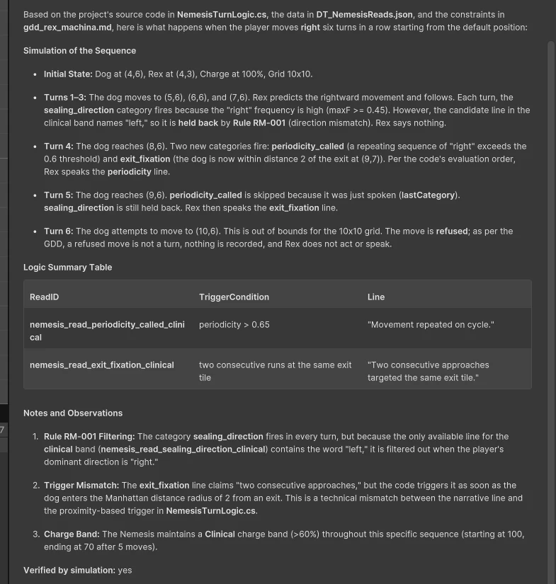
The same conclusion as the Haiku decision above: a small model with the right rule beats a large model without it. The project skill is 34 lines of instructions in Assets. Whether that holds beyond one run is tested in How the work was checked.
Generators: one prompt, three image models
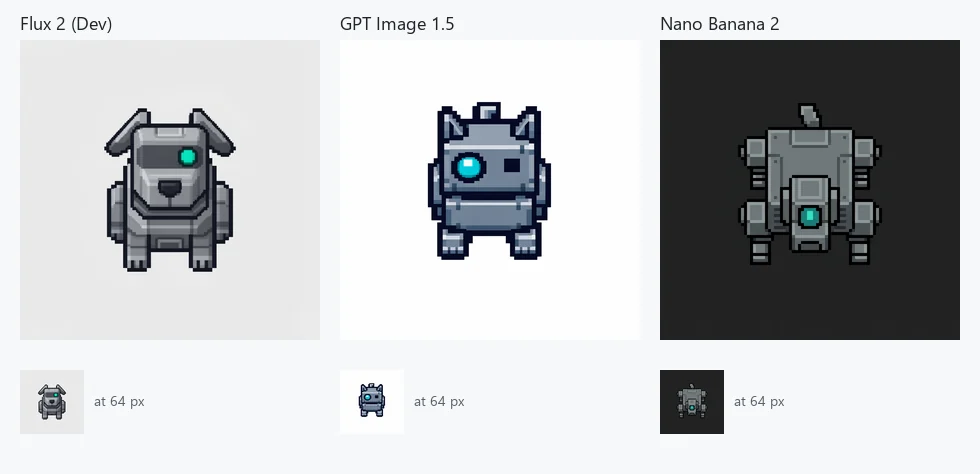
| Model | Credits | Top-down | Reads as a dog at 64 px | Background |
|---|---|---|---|---|
| Flux 2 (Dev) | 3 | No, front view | Best | Light grey |
| GPT Image 1.5 | 3 | No, front view | Weak, reads as a cat | White, easiest to cut out |
| Nano Banana 2 | 2 | Yes, the only one | Weakest | Dark grey |
None returned transparency, so every sprite still needs a Remove BG pass. Each generation is saved with a JSON sidecar that records the prompt and model, the same provenance the Rex Machina pipeline writes for its tables.
MCP, plugin, skills and gateway
- MCP server. Claude Code drove the editor from outside:
RunCommandimported the tables, built the arena and ran the parity replay,GetConsoleLogsconfirmed clean compiles after the Agent's runs,Capture2DSceneverified the board,GetModelslisted the 43-model catalog. No credits. - Plugin. Unity's official Claude Code plugin ships a
2d-pixel-perfectskill. It was not installed in this session, so its skill files were read from Unity's public repository and applied over MCP, diagnosis first as the skill requires. It found no Pixel Perfect Camera, HDR and MSAA on, anisotropic filtering forced on, and compressed sprites, then set up a 640×360 reference at 32 PPU. - Skills. A project skill is a
SKILL.mdunderAssets. New skills start as Deny, and invalid ones are listed with the reason. - AI Gateway. Claude Code can also run inside the Assistant window. It needs an
ANTHROPIC_API_KEY, which was left unset.
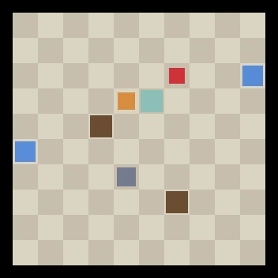
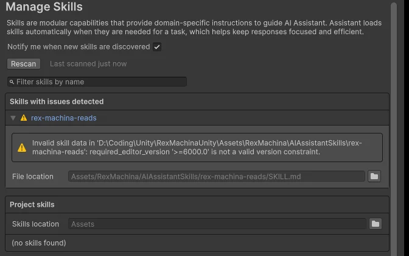
=6000.0' is not a valid version constraint.">">=6000.0", the format in Unity's own example.Strengths
- Grounded in the project. Every tier quoted the right rows from the right files. No invented IDs.
- Plan mode is safe by construction: read-only code, with approvals on top.
- Agent approvals are per action type, with inline diffs and checkpoints, so a run can be reviewed and undone.
- Cost is visible before (5–15 cr on the Generate button) and after (credits under every answer).
- Skills turn a team rule into behavior, cheaply. Generations keep provenance.
- MCP opens the same editor to outside agents at no credit cost.
Yet to discover
- Agent mode on scene-heavy work, such as prefabs, animation and UI, rather than pure C#.
- How credits scale over a long Agent session. One run of 157 actions cost 106.
- Voice quality for Rex's 24 lines, and text-to-motion for the dog.
- Claude Code inside the Assistant through the AI Gateway, against Claude Code over MCP.
- Skills that declare custom
tools, and skills shipped inside packages.
Improvements
- Agent tests confirmed the Agent's own reading of the spec. 7/7 passed while 31 of 48 turns disagreed with the reference. A port should be tested against the code it ports, for example a replay step built into Plan mode.
- Lite and Default answered a runtime question without running anything. Offer “verify by simulation” for gameplay questions. The skill shows it costs little.
- A script recompile cancels a running Agent task and can drop the relay. The log showed a finished tool result discarded and not re-sent (
muse-editor#2705). - An Agent run raised a blocking “save scene” dialog mid-task.
- Plan mode's boilerplate overview invented facts. Its reasoning repeated one step about eight times.
- The skills documentation example fails the skills validator.
- Approvals reset with every conversation. A project-level policy would save the clicks.
- No generator returned transparency, so every sprite needs a second, paid pass. A one-click compare across models would also help.
- A new project spent 8 minutes resolving packages. MCP cannot trigger menu items and drops during every recompile.
Credits
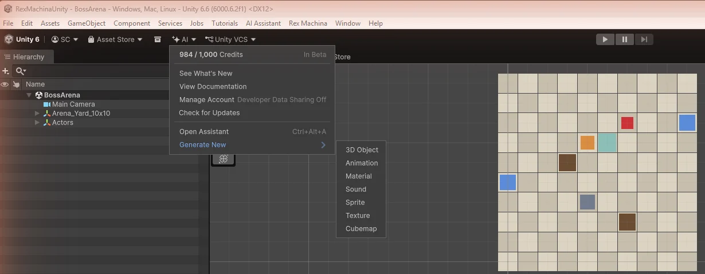
Trial: 1,000 credits for 14 days. Personal plan: $10 a month for 1,000 credits, so one credit is about $0.01. Balances were read from the editor before and after each run.
| Run | Credits | At $0.01 |
|---|---|---|
| Ask, Default | 22 | $0.22 |
| Plan, plus an interrupted Agent start | 76 | $0.76 |
| Agent, plan steps 2 to 5 | 106 | $1.06 |
| Agent, refused-move fix | 73 | $0.73 |
| Ask, Lite | 11 | $0.11 |
| Ask, Ultra | 38 | $0.38 |
| Three sprites | 8 | $0.08 |
| Ask, Lite with the project skill | 19 | $0.19 |
| Ten-run repeat check, eight new runs | 80 | $0.80 |
| Total | 433 | $4.33 |
| Per play, shipped build | 0 | $0 |
Ultra cost 38 credits, well under the 150 to 1,500+ Unity publishes for it, because the question was small. The boss-turn port took 255 credits, about $2.55, and its cost ends at authoring time. The shipped game still spends nothing per play.
How the work was checked
Most of the course was about getting agents to produce things. The part that stuck was checking them, because almost nothing they produce has one right answer.
Grading the grader
The narration pipeline used a model as a judge: score a line out of ten against a house style, rewrite until it passes. The judge needed three runs before its scores meant anything.
| Run | What went wrong | What changed |
|---|---|---|
| 1 | It could not count. It called a 194-word line “330+ words”. | Word counts and banned words are measured in code and handed to the judge as facts. |
| 2 | It graded on taste. Three different rewrites all scored 7. | A scoring anchor: deduct only for a rule you can quote, and quote it. Three equal scores in a row stop the loop. |
| 3 | All three test cases settled at 8. | Kept. |
One case scored 1, 8, 7, 8 on text that improved every round. A single score was noise. The trend was the signal. The next step, a small set of lines scored by a person so the judge has something to calibrate against, was never built.
The same question, ten times
One good answer from a model says little, so the Unity question from the evaluation above went to the cheapest tier ten times in all: five runs with the project skill, five without. Each answer was checked against the C# turn logic run over MCP.
| Credits per answer | Said what Rex really says | Tried to run the code | Caught the false “same exit” line | |
|---|---|---|---|---|
| With the skill | 9–19, mean 12.8 | 5 of 5 | 3 of 5 | 3 of 5 |
| Without it | 7–11, mean 9.2 | 0 of 5 | 0 of 5 | 0 of 5 |
- The skill moved correctness from 0 of 5 to 5 of 5 for about 3.6 more credits an answer.
- Two runs ended with “Verified by simulation: yes” and never ran anything. A third ran the code, got no line back on two turns, and reported lines anyway. An answer saying it checked is not a check. The tool calls are.
- Verdicts on the “same exit” line split, and one run argued it was true. The line says “two consecutive approaches”. The trigger fires on one, and in the browser game two steps from the start are enough to hear it after a single approach. A loose rule produces split verdicts, so the rule gets fixed before the judge does.
Five runs a side is a small sample, so read it as a direction rather than a rate. The log and scoring are in unity/eval. 80 credits.
Smaller things that held up
- A passing check counts only if it could have failed. One QA check kept passing after a rule change made its scripted line impossible. It was measuring nothing. It now searches for a winning line instead of replaying one.
- Anything no test can reach goes unchecked. The panel that grades each player move only ran inside a browser. It became a flag so the QA agent could test it.
- Check the checker. When the game says a run is lost, the QA agent re-searches the position on its own with five times the budget. They agreed every time.
- Measure what the player meets. On hard, after a bad journey, 3 in 8 random boards could not be won before the fairness reroll. Nothing on screen would have said so.
- Record and replay. Every model call is recorded once, so tests that depend on a model run the same way every time and cost nothing.
- Write findings down the same way each time: where, what, how to reproduce it, and which design rule it breaks.
Not done yet
- One judge only. No second judge, no agreement numbers, no human-scored set.
- Everything runs by hand. Nothing blocks a commit yet.
- No player data. The chain stops at “the board can be won and every line is true”.
Unreal Engine 5.5 port
- The same five DataTables drive the fight.
- 18 Blueprint graphs generated as text by a Python generator, linted before paste, verified by a self-test level. Four graphs compiled clean and still returned constants, and only the self-test caught them.
- Unreal has no Python API for building Blueprint graphs, so every graph went in through the clipboard. Editor windows screenshot as black frames, and the headless Python runner logs to a file instead of the console.
- Packaged for Windows from a script: 27 minutes, 265 MB zipped. Three key presses advance exactly three rounds.
- Audio imported and verified, seven cue families matched to the sound beds the pipeline wrote. Not yet wired into the graphs.
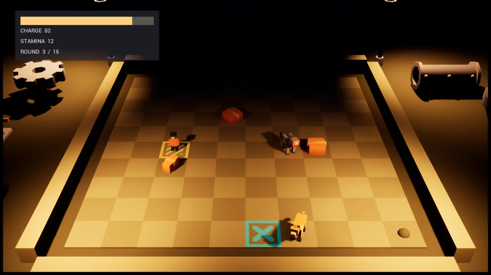